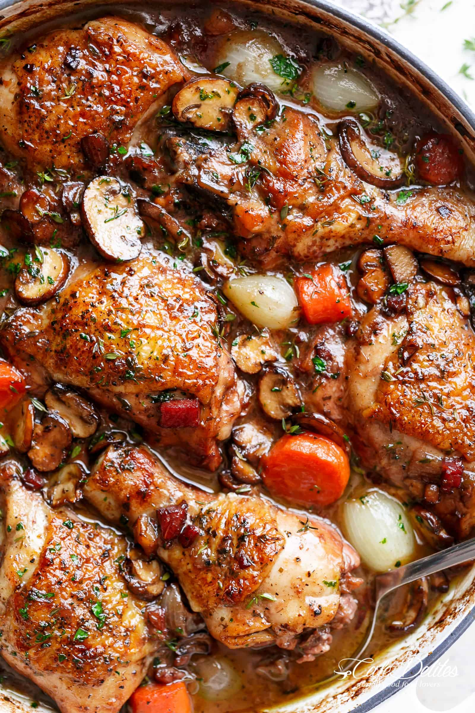

COQ AU VIN

Description
A classic stew from France which translates coq as rooster, and vin as wine.
There are many other ingredients that are combined such as rooster's blood, onions, carrots, garlic, thyme, mushrooms, salt, and pepper.
Ingredients
- (750 ml) bottles dry, full bodied red wine
- 2 (3½-lb) chickens, each broken into 4 breasts, 4 thighs and 4 legs
- celery stalks, peeled and cut into 2” batons
- 2 heads garlic, sliced in half
- 2 lbs small button mushrooms, cleaned and trimmed
- 1 lb pearl onions, peeled
- ½ lb slab bacon, cut into ¼ inch batons
- 1 Sachet (8 sprigs thyme, 1 fresh bay leaf, 2 teaspoons coriander seed, 1 teaspoon cracked white pepper tied up in cheesecloth with butchers twine)
- 4 tablespoons olive oil
- 4 tablespoons flour
- 4 cups unsalted chicken stock
- ½ bunchfreshparsley,leavespicked
- Salt and freshly ground pepper
Steps
- In a large saucepan reduce the wine by half and cool
- place the chicken in large container with the celery, garlic, mushroom, bacon, an sachet
- cover the ingredients with the reduced win and marinate in the refrigerator over night
- Preheat oven to 325 degrees fahrenheit
- Place a large Dutch oven over medium heat and cook the bacon
- Cook and stir until crisp and sear the chicken on all sides of the bacon fat
- Remove the chicken and add the vegetables while stirring for about 5 minutes
- Add flour, cook, and stir for another 4 minutes
- Add the wine, bacon, chicken, and chicken stock and transfer to the oven
- Cook for one and a half hours
- Incorporate all ingredients back together and serve with parsley